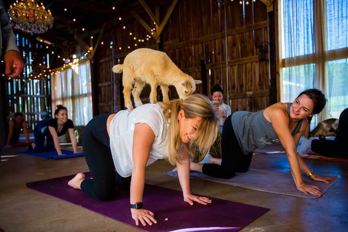
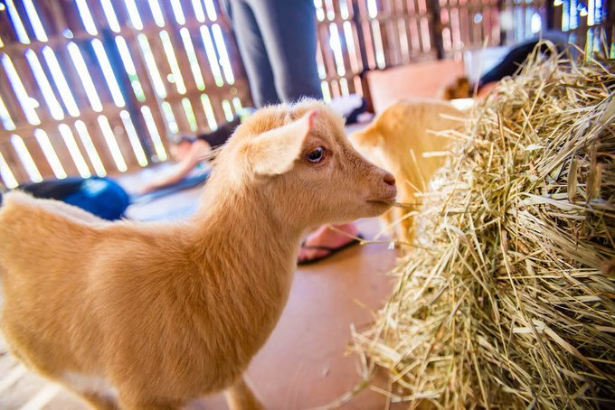

Arts and Culture
Evan Haddad
Remember when we told you two weeks ago that a goat yoga pop-up studio was coming to the neighborhood? Yea, Bushwick Daily isn't invited to check it out.
The news was so popular that we wanted to send a correspondent to document the experience — you know, to see how it feels to do yoga with a diaper-clad baby goat on your back. NY Goat Yoga, which is organizing the event and bringing the goats from its Gilbertsville Farmhouse in Upstate New York, says that animals help humans foster better connections with each other.
We really wanted know if that were true, and if so, whether the experience pictured below was worth the $40 ticket for a 45-minute class or the $50 ticket for the class and "goat happy hour" afterwards.
Unsurprisingly, most other media in New York City wanted to know that, too. Last week, we reached out to NY Goat Yoga to get a press pass for the event. They sent us a link to buy a ticket. We asked if there was a way to cover it without buying one, and the correspondence stopped. We finally received this reply from a spokesperson today:

"Thank you so much for reaching out to us and considering our story. Due to the overwhelming response and media request, we have decided not to commit to media coverage during Brooklyn pop-up classes. We feel that to preserve the integrity of the class it is the right policy for us. We also want our participants to get the true human-animal connection as well as for the safety of our goats. Subject to our availability and the wellness of the goats we can possibly come to your studio for video/photo opps for your story."
That's probably the right PR move, because as the pictures show, goats really don't do well with photographers, do they? Just look how terrified the attention makes them:
In the email, NY Goat Yoga did mention, however, that "we don't want to miss out on being in Bushwick Daily so we were hoping you could still build a story on us based on our photos previously taken...We would also love the article to be featured on your Instagram and Facebook page as well with us tagged."
You've got to be kidding us (no pun intended). That's like saying we can't come to the party, but we can invite all our friends.
Well, that's what we're going to do anyway, Bushwick. We can't go and give you the lowdown on this goat yoga event; but you still can. Check out our past coverage for the details.
